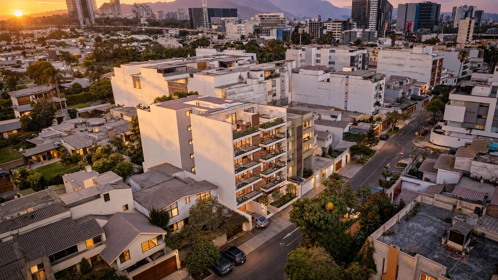
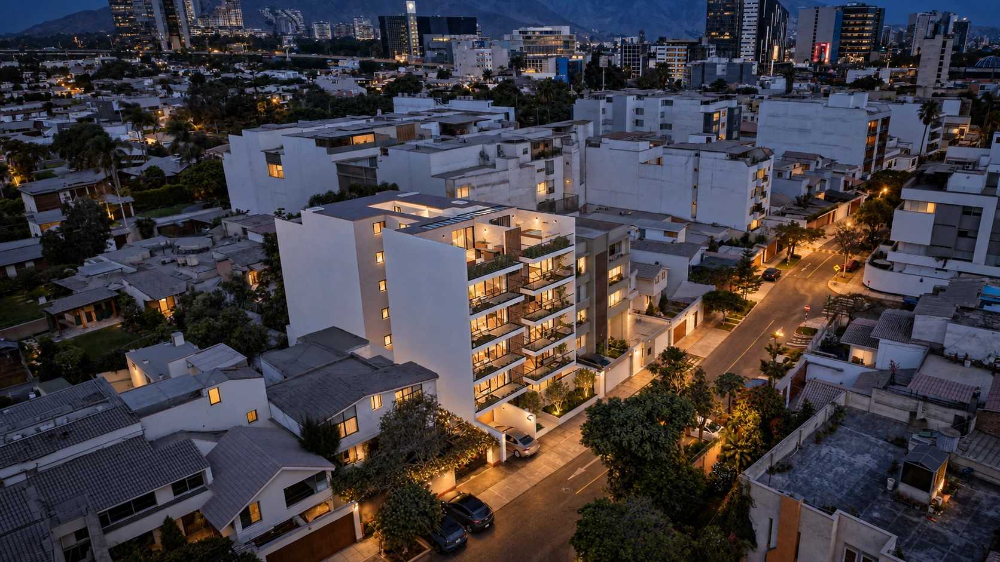

01 / EL ENTORNO
Todo empieza
desde arriba.
Ubica el edificio y descubre cómo se conecta con la ciudad.
01 / EL ENTORNO
Ubica el edificio y descubre cómo se conecta con la ciudad.
Desliza para descubrir
PROYECTO VERTICAL / OCÉANO ATLÁNTICO
Explora Océano Atlántico: del edificio y sus plantas a cada departamento, sus espacios comunes y su ubicación.
El recorrido carga dentro de esta página. Usa los controles propios del showroom para explorar.

EXPLORA / VERTICAL
Selecciona una función y mira cómo se vive el recorrido.
Fachada, acceso y contexto en una sola mirada.
VISTAS DÍA, ATARDECER Y NOCHE
Mueve la barra y descubre el proyecto bajo una nueva luz.



TAMBIÉN PARA TU EQUIPO
Administra contenidos, disponibilidad y métricas del proyecto desde el dashboard.
Conoce el dashboard ↗Explorar showroom ↗RM Promotora Inmobiliaria Vertical
 Explorar showroom ↗
Explorar showroom ↗Kayen Vertical
 Explorar showroom ↗
Explorar showroom ↗Cima Prince Vertical
 Explorar showroom ↗
Explorar showroom ↗Prohouse Vertical
 Explorar showroom ↗
Explorar showroom ↗Sumac Vertical
Próximamente Vertical
INMOBILIARIAS QUE CONFÍAN EN RVISIOON


EL SIGUIENTE PASO
Conversemos sobre la arquitectura y la información que necesita tu proyecto para presentarse mejor.